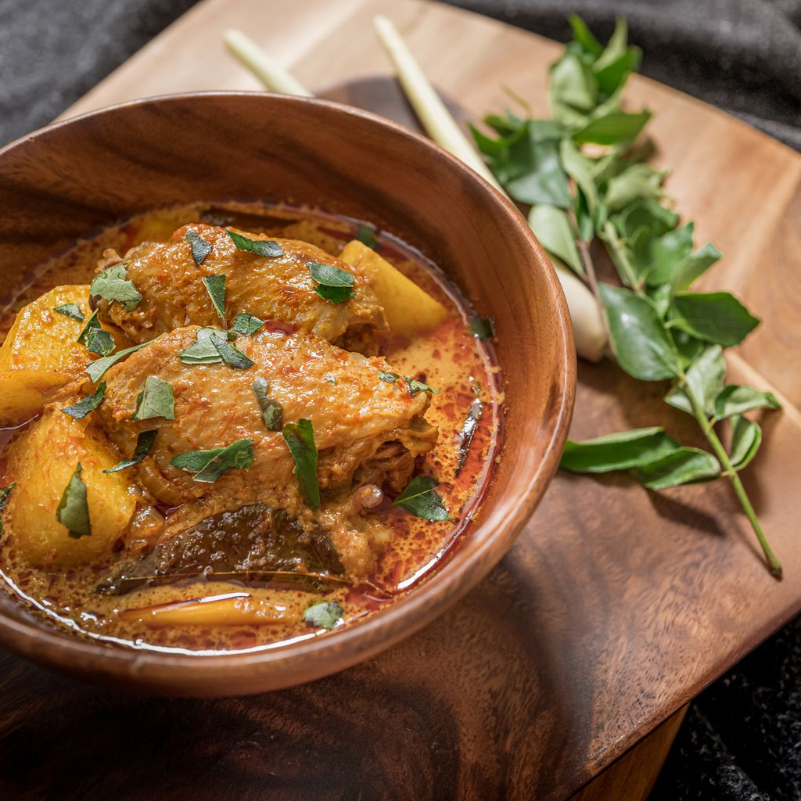

Carry Poulet's Recipe

Description
The carry poulet is one of the most famous family dish in Réunion Island. It is very easy to accomplish.
Ideally, chose a free-range chicken. The version prepared with tomatoes is the most well-know, yet, traditionally,
we can prepare it without tomatoes.
Ingredients
- Chicken: 1
- Onions: 2
- Garlic cloves: 4
- Tomatoes: 4
- Ginger: 1 inch
- Fresh thyme: 1 tsp
- Curcuma: 1/2 tsp
- Salt
- Pepper
Steps
- Cut in small pieces the onions and the tomatoes. Grind the garlic and the ginger with the pepper and the salt.
- Heat neutral oil in a large pot and cook the chicken until it gets a nice golden brown color.
- Add the onions and the paste of garlic and ginger and fry until fragrent. Once fragrent, add the curcuma, the thyme, and the tomatoes.
- Add a cup of water and cook for 15 minutes or until the chicken is well cooked.